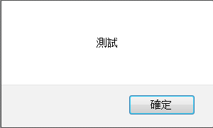
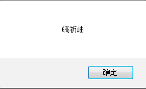
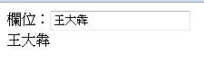
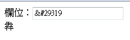
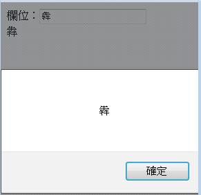

|
|
要在瀏覽器中執行JavaScript，可在一個HTML/XHTML檔案中撰寫<script></script>，並於兩個標籤間撰寫JavaScript程式碼。例如：<script> 這個簡單的網頁會出來一個對話框，你可以在當中輸入任意字元，即使輸入「王大犇」也可以正確在下一個警示方塊中顯示，這是因為JavaScript在內部是使用Unicode處理字元，實作上採用UTF-8，輸入的接收或警示方塊的訊息顯示，都是以Unicode處理。 如果將JavaScript儲存於.js檔案中，並在HTML中如下載入.js檔案： <html> 在這邊要注意編碼的問題，瀏覽器會假設載入的.js編碼與HTML網頁編碼相同。如果你的.js檔案與HTML編碼不同，JavaScript中非ASCII相容字元部份就會出現亂碼。例如，如果你的.js如下： alert('測試');
若這個.js檔案是Big5編碼，則會顯示：  如果.js檔案是UTF-8編碼，則會顯示：  如果你的.js是UTF-8編碼，而網頁是Big5，則可以在<script>上使用charset指定.js的編碼為UTF-8： <script type="text/javascript" charset="UTF-8" src="js/JavaScript-2.js"></script>
如此，瀏覽器才會知道以UTF-8載入.js檔案，才可以正確顯示中文，只要你的JavaScript程式中撰寫的字串，可以正確地被執行環境載入執行，那麼在操作DOM物件相關特性（Properties）時，就可以正確地顯示字串，無論原本的HTML網頁是什麼編碼。 舉例來說，若你有個UTF-8的.js檔案： window.onload = function() {
雖然這當中的「犇」字，不是Big5範圍內的編碼，但Big5網頁中載入後： <html> 也是可以正確地顯示出「王大犇」：  別以為可以這麼撰寫並將HTML儲存為Big5： <html>
<head> <script type="text/javascript"> window.onload = function() { var name = '王大犇'; document.getElementById('input1').value = name; document.getElementById('span1').innerHTML = name; }; </script> <meta http-equiv="Content-Type" content="text/html; charset=Big5"> </head> <body> 欄位：<input id="input1" type="text"><br> <span id="span1"></span> </body> </html> 無論你的編輯器是否會對「犇」字提出無法以Big5儲存的警告，就算編輯器無聲無息地儲存了檔案，實際上原始碼已經是： <html>
<head> <script type="text/javascript"> window.onload = function() { var name = '王大?'; document.getElementById('input1').value = name; document.getElementById('span1').innerHTML = name; }; </script> <meta http-equiv="Content-Type" content="text/html; charset=Big5"> </head> <body> 欄位：<input id="input1" type="text"><br> <span id="span1"></span> </body> </html> 在 Big 5 網頁難字 中談過可以在HTML中使用實體編號來解決Big5難字問題，也許你會想到這麼撰寫： <html>
<head> <script type="text/javascript"> window.onload = function() { var name = '犇'; document.getElementById('input1').value = name; document.getElementById('span1').innerHTML = name; }; </script> <meta http-equiv="Content-Type" content="text/html; charset=Big5"> </head> <body> 欄位：<input id="input1" type="text"><br> <span id="span1"></span> </body> </html> 不過這會使得瀏覽器如下顯示：  innerHTML特性是個較特別的特性，指定給它的字串會被當作HTML進行剖析，但其它DOM特性就不會將字串視為HTML了，很可惜地，JavaScript的核心API中，String也沒有escapeHTML或unescapeHTML()之類的方法。 一個投機的方式，就是從innerHTML下手，既然傳給innerHTML的字串被當作HTML解釋了，而且也正確顯示出字元了，這表示在JavaScript執行環境中，它已經是個正確地Unicode字串了，那就從innerHTML再取回字串： <html> 這個程式還順便從輸入欄位取得最後的字串結果，結果也是顯示正確的字元：  只要能正確在瀏覽器中顯示字元，透過DOM特性取得的就會是正確的字元，無論是哪種網頁編碼。 |